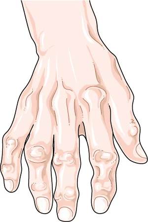

L'artrosi della mano riguarda le piccole articolazioni delle dita, e si riconosce per i noduli duri che si formano sul dorso, la rigidità del mattino e il dolore nei gesti di presa.
È una condizione che si gestisce, più che una che si risolve: l'obiettivo è ridurre il dolore e mantenere la mano capace di fare quello che deve fare. Su come arrivarci esistono raccomandazioni europee aggiornate.[1]

Come si manifesta
- Noduli duri sul dorso delle dita, all'ultima articolazione o a quella intermedia.
- Rigidità al mattino o dopo l'inattività, che si scioglie muovendo la mano, in genere in meno di mezz'ora.
- Dolore nei gesti di presa e nei movimenti fini.
- Con il tempo, dita che si deviano leggermente e perdono mobilità.
- In alcune persone l'esordio è più acuto, con articolazioni arrossate e dolenti per settimane, che poi si assestano.
Se è interessata soprattutto la base del pollice, con dolore stringendo o girando una chiave, la scheda da leggere è quella sulla rizoartrosi.
Quando preoccuparsi
Contatta il medico presto se
- le articolazioni sono gonfie, calde e molto dolenti, con rigidità del mattino che dura più di un'ora: può trattarsi di una condizione infiammatoria, che si cura diversamente;
- il gonfiore riguarda simmetricamente molte articolazioni, polsi compresi;
- compaiono febbre, stanchezza marcata o perdita di peso;
- una sola articolazione diventa improvvisamente molto dolente e arrossata.
Cosa puoi fare tu
Fai
- Continua a usare la mano: gli esercizi per la funzione, la forza e il dolore sono raccomandati per tutte le persone con questa condizione.[1]
- Distribuisci gli sforzi nella giornata invece di concentrarli.
- Usa ausili che riducono la forza richiesta: apribarattoli, manici larghi, maniglie ingrossate.
- Rivedi i gesti che costano di più e trova un modo diverso di farli.
- Per la terapia farmacologica chiedi al medico.
Non fare
- Non smettere di usare la mano per proteggerla: la rigidità peggiora con l'inattività.
- Non aspettarti che i noduli regrediscano: non lo fanno, ma il dolore in genere si attenua nel tempo.
Servono esami?
La diagnosi è clinica nella grande maggioranza dei casi: la sede, l'aspetto delle articolazioni e la storia bastano. La radiografia serve se il quadro non è chiaro, e gli esami del sangue quando si vuole escludere una condizione infiammatoria.
Come sempre, è il medico specialista che valuta sulla base della visita se siano necessari.
Le cure, e quanto funzionano
Le raccomandazioni europee, aggiornate nel 2018, sono costruite su cinque principi generali e dieci raccomandazioni.[1] I punti che contano per chi legge:
- Educazione, ergonomia e gestione del ritmo delle attività, con ausili dove servono: è la base, per tutti.
- Esercizi per la funzione, la forza muscolare e il dolore: raccomandati per tutti.
- Trattamenti locali preferiti a quelli per bocca, con gli antinfiammatori in formulazione topica come prima scelta.
- Analgesici orali, soprattutto antinfiammatori, per periodi limitati di tempo.
- Infiltrazioni di cortisone: in generale non raccomandate nell'artrosi della mano; si possono considerare nelle articolazioni interfalangee dolenti.
- Nessun farmaco di fondo, né tradizionale né biologico: l'artrosi della mano non si tratta con i farmaci dell'artrite reumatoide.
- Chirurgia solo quando il dolore resiste agli altri trattamenti, con tecniche diverse secondo l'articolazione interessata.
Fra i principi generali ce n'è uno che va riportato per intero: il trattamento va individualizzato e deciso insieme alla persona, e spesso richiede di combinare più approcci.[1]
Quando serve lo specialista
Per distinguere l'artrosi da una condizione infiammatoria, che ha una cura del tutto diversa, per impostare esercizi e strategie di protezione articolare, e per valutare gli ausili che servono davvero nella tua giornata.
E, quando il dolore resiste, per discutere, numeri alla mano, quale trattamento sia più idoneo per la tua situazione.
Da dove vengono queste informazioni
- Kloppenburg M, Kroon FPB, Blanco FJ, et al. 2018 update of the EULAR recommendations for the management of hand osteoarthritis. Ann Rheum Dis 2019;78(1):16–24. doi:10.1136/annrheumdis-2018-213826. Cinque principi generali e dieci raccomandazioni.
Scheda aggiornata il 6 novembre 2026. Prossima revisione prevista entro novembre 2028.